À propos
Isabelle Di Nunzio
Praticienne en massages du monde, réflexologue et formatrice, avec Tahiti au cœur.
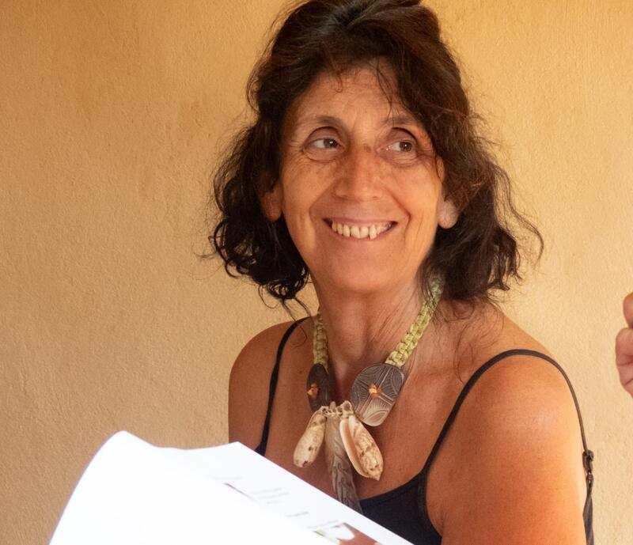
Mon parcours
Du toucher comme langage
[À PERSONNALISER] Depuis toujours, le toucher est pour moi une façon d'entrer en relation avec l'autre, avec respect et bienveillance. Après une première vie professionnelle [à préciser], je me suis formée aux massages du monde auprès de praticiennes et praticiens passionnés.
Au fil des années, j'ai découvert les traditions d'Hawaï et de Thaïlande, le massage californien, les pierres chaudes, puis la réflexologie plantaire. Chacune m'a appris une manière différente d'écouter le corps. [Formations, écoles et années à préciser]
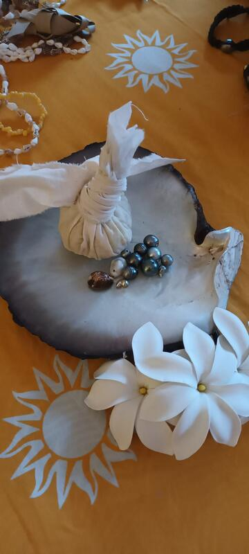
Mon lien avec Tahiti
La Polynésie, une rencontre qui a tout changé
[À PERSONNALISER] Ma rencontre avec Tahiti et la culture polynésienne a profondément marqué ma pratique. [Raconter ici : séjour(s), rencontres, transmission du Taurumi, auprès de qui…]
C'est là-bas que j'ai découvert le Taurumi, ce massage traditionnel transmis de génération en génération. J'ai à cœur de le pratiquer et de l'enseigner dans le respect de ses racines : le mana, l'accueil, la générosité du geste.
Ma philosophie
Prendre le temps
[À PERSONNALISER] Pour moi, un massage est avant tout une rencontre. Je prends le temps de vous écouter pour adapter chaque séance à vos envies et à votre rythme. Pas de protocole figé : le geste suit votre respiration.
- L'écoute : chaque séance commence par un échange.
- La douceur : un toucher respectueux et enveloppant.
- L'authenticité : des techniques transmises dans le respect de leurs origines.
- La transmission : partager ce savoir à travers mes formations.
En images
Quelques moments partagés
Séances, formations et ateliers autour de la culture polynésienne.
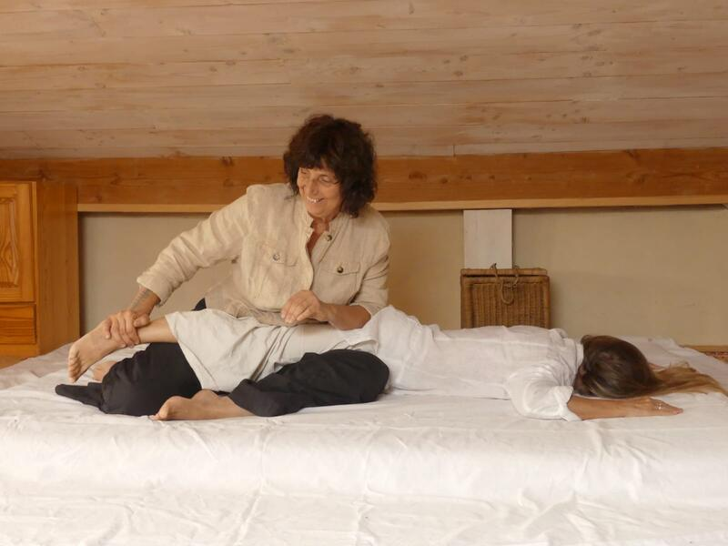
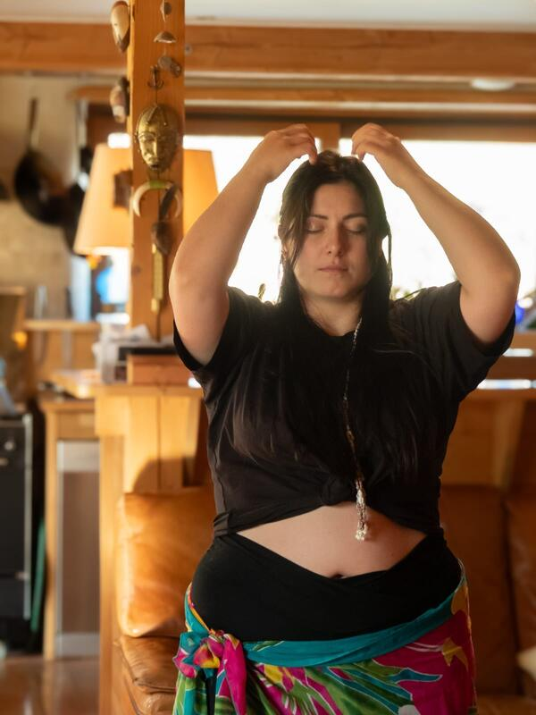
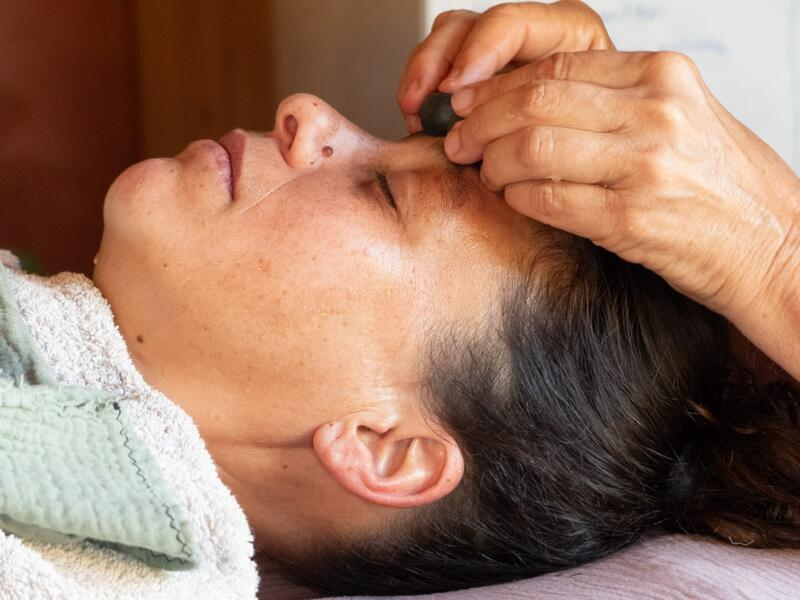
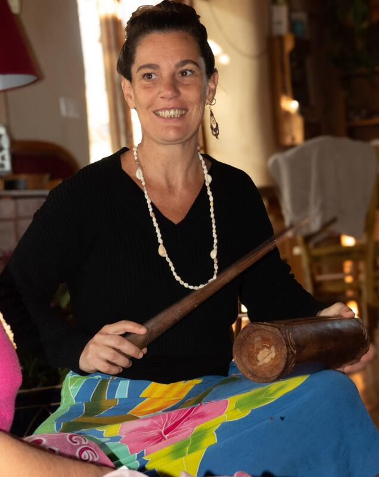
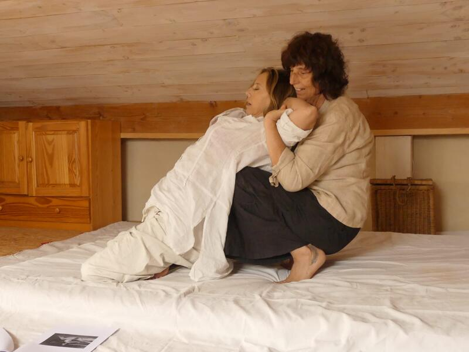
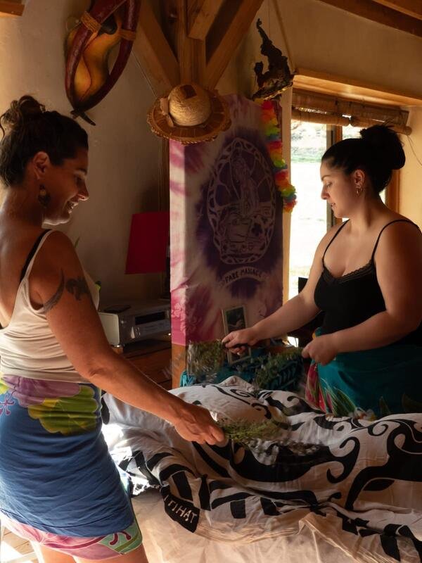
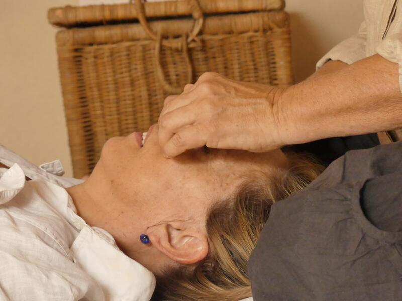
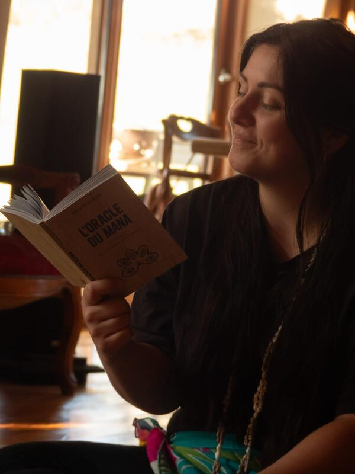
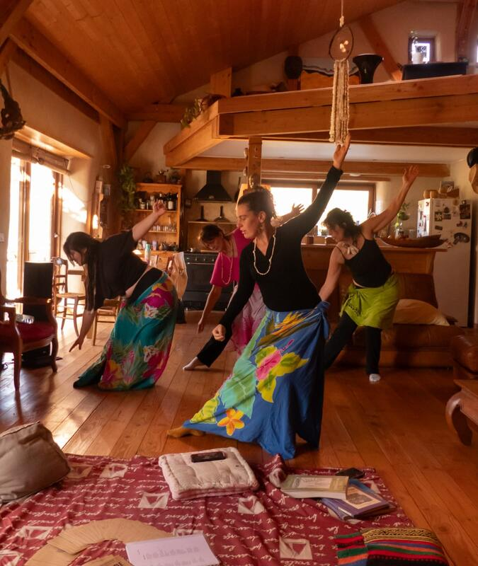
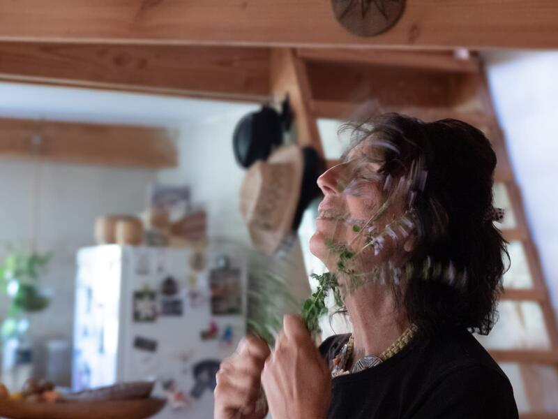
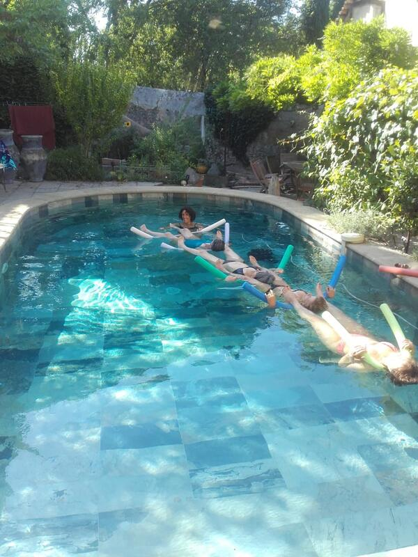
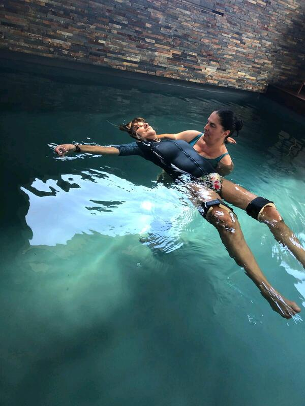
Sur rendez-vous
Envie d'une parenthèse de bien-être ?
La réservation se fait uniquement par téléphone. Je vous conseille sur le massage le plus adapté à vos envies et nous convenons ensemble d'un rendez-vous, au salon ou chez vous.
Vous pouvez aussi écrire à isabelledinunzio@gmail.com ou me suivre sur Instagram @lacherprisemassage.